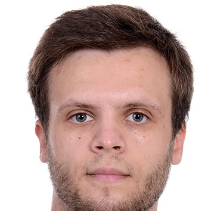

Rețele neuronale convoluționale
Transfer learning cu modele preantrenate, adaptate la imagini biomedicale cu seturi de date limitate.
Direcții de cercetare →Inginerie electrică · Deep learning · Analiza imaginilor
Doctorand · Școala Doctorală de Inginerie Electrică
Deep learning pentru clasificarea organitelor subcelulare în microscopia de fluorescență. Doctorand la Școala Doctorală de Inginerie Electrică, Universitatea Națională de Știință și Tehnologie POLITEHNICA București.

Domenii de interes
Transfer learning cu modele preantrenate, adaptate la imagini biomedicale cu seturi de date limitate.
Direcții de cercetare →Recunoașterea automată a organitelor subcelulare și analiza particularităților imaginilor de fluorescență.
Direcții de cercetare →Praguri de încredere cu opțiune de respingere și clasificatori în cascadă pentru clasele greu de separat.
Direcții de cercetare →Lucrări selectate
Lucrări în pregătire. Lista va fi actualizată pe măsură ce articolele sunt publicate.
Colaborare
Deschis la colaborări în analiza imaginilor de microscopie și învățare profundă.